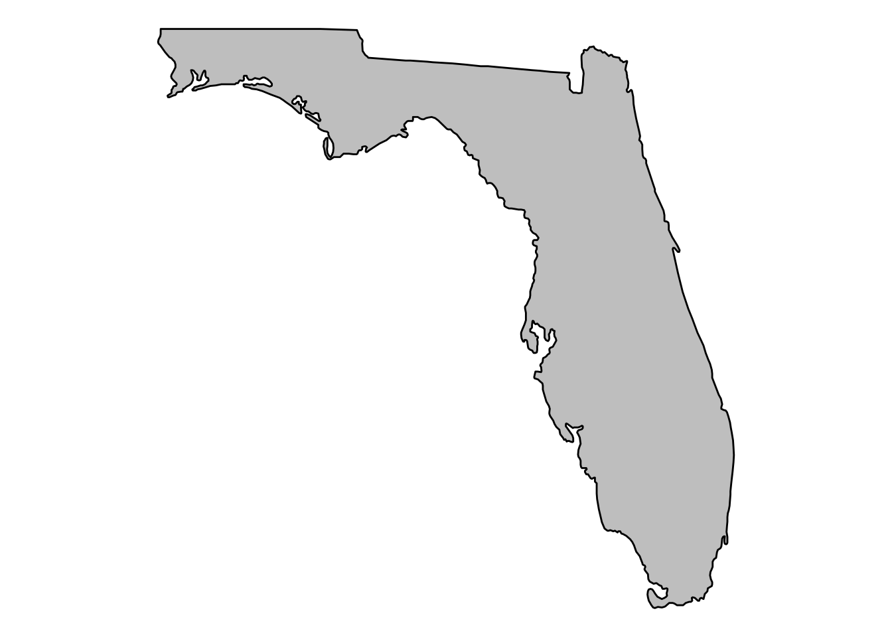
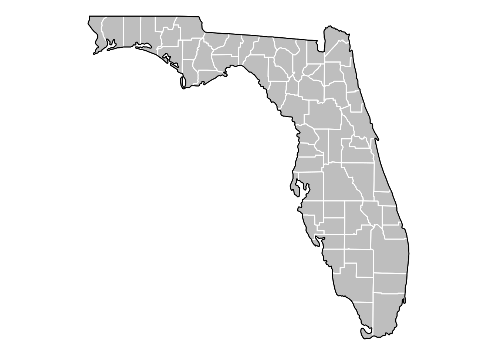

Attaching package: 'janitor'
The following objects are masked from 'package:stats':
chisq.test, fisher.test
library(httr)library(ggmap)
Google's Terms of Service: https://cloud.google.com/maps-platform/terms/.
Please cite ggmap if you use it! See citation("ggmap") for details.
library(here)
here() starts at /home/kgilds/kevinsblogIII
Intro
My issue list includes a task to map the Fl Absences data set.
Get the Data
url <-'https://www.fldoe.org/core/fileparse.php/7584/urlt/1516ABS21DAYSTDistSchl.xlsx'#location of data on the internet#httr::GET(url, write_disk(absences <- tempfile(fileext = ".xls"))) #obtain the spreadsheet file from the internet
Read the data
absences_2 <- readxl::read_excel(here("posts", "maps", "absences.xlsx"),skip =2) #read the spreadsheet file and skip the first two rowsabsences_2 <- janitor::clean_names(absences_2) #Change column names with the Janitor.absences_2 <- dplyr::rename(absences_2, "absent_21_plus"="absent_21_days_or_over") #Change name again to shortenabsences_2 <- dplyr::select(absences_2, 2, 4:5) #select columsn of interest
Clean and Convert the data
#absences_2$enrollments <- as.numeric(absences_2$enrollments) #Change data to numeric formatabsences_2$absent_21_plus <-as.numeric(absences_2$absent_21_plus) #change data to numeric format
# A tibble: 75 × 2
district_name mean
<chr> <dbl>
1 ALACHUA 13.9
2 BAKER 21.0
3 BAY 12.7
4 BRADFORD 18.6
5 BREVARD 6.62
6 BROWARD 8.71
7 CALHOUN 20.9
8 CHARLOTTE 7.58
9 CITRUS 11.0
10 CLAY 9.78
# … with 65 more rows
Maps
Get Florida Map
states <-map_data("state")fl_df <-subset(states, region =="florida")
This chunks sets up how to overlay county boundaries over the Florida map.
counties <-map_data("county")fl_county <-subset(counties, region =="florida")
This will us a map of Florida
fl_base <-ggplot(data = fl_df, mapping =aes(x = long, y = lat, group = group)) +coord_fixed(1.3) +geom_polygon(color ="black", fill ="gray")fl_base +theme_nothing()

fl_base +theme_nothing() +geom_polygon(data = fl_county, fill =NA, color ="white") +geom_polygon(color ="black", fill =NA) # get the state border back on top

Back to the educational set
School districts in Florida pretty much align with Florida Counties. However, there is nuance between the map data and the school district data.
This chunk renames the district_name to match the name in the map data and matches the case.
absent_21_c <- absent_21 %>%rename("subregion"="district_name") #match name with map data in preperation of joining. absent_21_c$subregion <-tolower(absent_21_c$subregion) #make lowercaseabsent_21_c
# A tibble: 75 × 2
subregion mean
<chr> <dbl>
1 alachua 13.9
2 baker 21.0
3 bay 12.7
4 bradford 18.6
5 brevard 6.62
6 broward 8.71
7 calhoun 20.9
8 charlotte 7.58
9 citrus 11.0
10 clay 9.78
# … with 65 more rows
Use the anti-join to determine issues with merging
non_match <-anti_join(fl_county, absent_21_c, by ="subregion")non_match